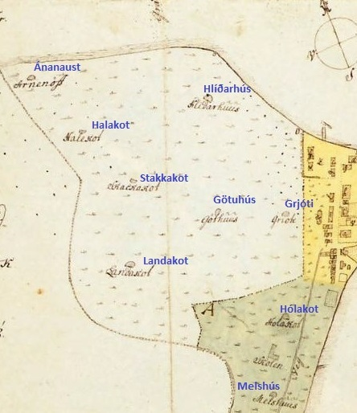

Kort af Reykjavík frá árinu 1787 sem sýnir alla bæi í vesturbænum. Þar má meðal annars sjá Hala eða Halakot, eins og kotið var ýmist kallað. Getið er um bæinn í heimildum frá 1787 og Hali virðist hafa byggst snemma úr landi Hlíðarhúsa. Tvíbýli var þar á fyrri hluta 19. aldar.
Bærinn stóð þar sem nú eru gatnamót Ránargötu og Bræðraborgarstígs, en staðsetningin þó fremur ónákvæm. Árið 1882 var byggt timburhús sem nefndist Hali að Bræðraborgarstíg 4–6 og árið 1896 var byggður steinbær sem einnig var nefndur Hali að Bræðraborgarstíg 5.
Hugsanlegt er að gamli torfbærinn hafi staðið þar á milli, en í heimildum segir að lóð Hala virðist hafa tekið yfir mikinn hluta svæðisins þar sem Bræðraborgarstígur og Ránargata mætast. Ellert Schram skipstjóri byggði hús um aldamótin sem enn stendur og telst Bræðraborgarstígur 4. Árið 1934 var reist steinhús á lóðinni sem ber sama húsnúmer, 4a.